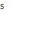

CONNECT4
this is the game known as "CONNECT4".
Let me show you one of my portforio and please enjoy the game if you like.
・This is a turn-based game, red and yellow.
・Pushing the cell which has number on left side only can drop stones Alternately.
・The one which can achieve "CONNECT4" can win the game.
・©Motty,2021/01/08